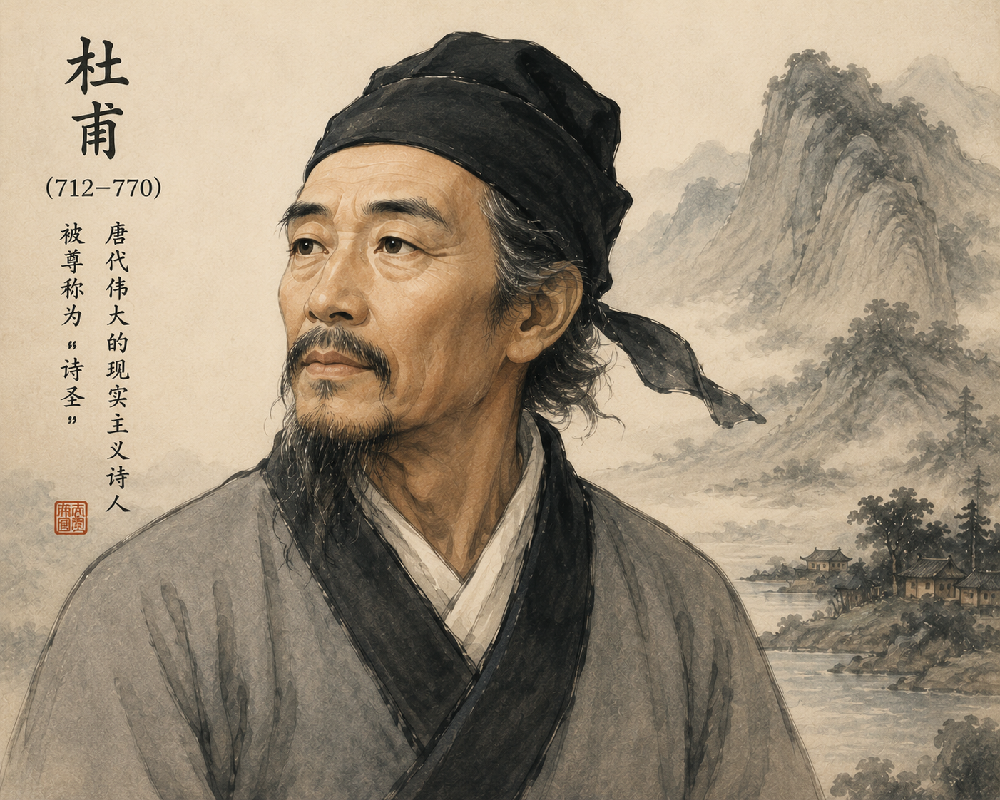
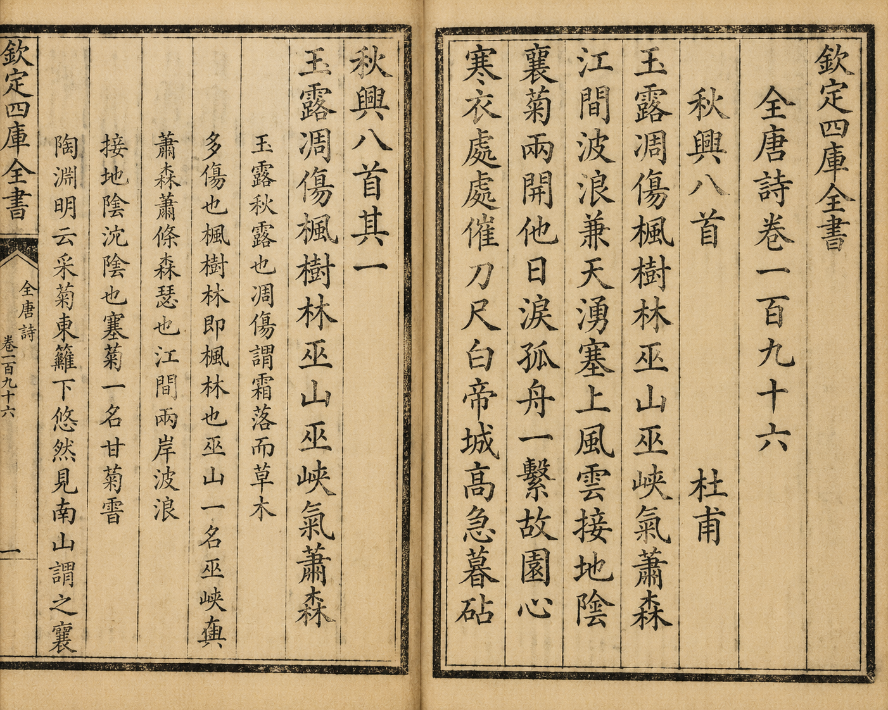

(Cảm cảm xúc mùa thu) - Đỗ Phủ
• Bạn đã được làm quen với một số bài thơ Đường luật trong sách giáo khoa Ngữ văn cấp Trung học cơ sở. Hãy chia sẻ ấn tượng của bạn về đặc điểm hình thức cũng như nội dung của những bài thơ thuộc thể loại này.
• Bạn đã bao giờ xa gia đình và thấy nhớ nhà? Nếu có thể, hãy chia sẻ về trải nghiệm ấy của bạn.
Gợi ý trả lời:
Khái niệm: Thơ Đường luật (còn gọi là thơ cận thể) là thể thơ ngũ ngôn hoặc thất ngôn được sáng tác theo những nguyên tắc thi luật nghiêm ngặt được đặt ra từ thời nhà Đường (Trung Quốc).
Các dạng chính:
| Cặp câu (Liên) | Tên phần | Chức năng & Quy tắc thi luật |
|---|---|---|
| Câu 1 - 2 | Đề | Mở đầu bài thơ, giới thiệu đề tài, thời gian, không gian. Gieo vần cuối câu 1, 2. |
| Câu 3 - 4 | Thực | Triển khai cụ thể đề tài, miêu tả cảnh vật hoặc sự việc. Bắt buộc phải đối nhau (đối ý, đối từ loại). |
| Câu 5 - 6 | Luận | Mở rộng suy ngẫm, bàn luận về cảnh vật và tâm sự. Bắt buộc phải đối nhau. |
| Câu 7 - 8 | Kết | Thâu tóm lại toàn bộ ý chính của bài thơ, bộc lộ tình cảm, cảm xúc của tác giả. |
• Gieo vần: Thường gieo 1 vần bằng duy nhất ở cuối các câu 1, 2, 4, 6, 8 (độc vần).
• Luật bằng trắc: Quy định nghiêm ngặt về sự hòa thanh giữa các câu để đảm bảo cân bằng âm hưởng.
• Cấu tứ & Ngôn từ: Xây dựng tứ thơ theo quan hệ tương đồng hoặc đối lập; tả ít gợi nhiều, gián tiếp hơn trực tiếp; sử dụng vốn từ hữu hạn nhưng tinh tế.

Đỗ Phủ (712–770) - Tranh của Tương Triệu Hoà
• Đỗ Phủ (712 - 770), tên chữ là Từ Mỹ, quê ở tỉnh Hà Nam, Trung Quốc.
• Được tôn vinh là "Thi thánh" (Thánh thơ) trong lịch sử văn học Trung Hoa.
• Thơ ông chan chứa tình cảm bao la, phản ảnh chân thực thời đại nên được gọi là "Thi sử" (Lịch sử bằng thơ).
• Ba chủ đề lớn trong thơ Đỗ Phủ:
• Hoàn cảnh sáng tác: Mùa thu năm 766, sau loạn An - Sử, Đỗ Phủ đang sống phiêu bạt, ốm đau, khốn khó tại Quỳ Châu (nay thuộc tỉnh Tứ Xuyên). Ông sáng tác chùm 8 bài thơ thất ngôn bát cú có nhan đề chung là Thu hứng.
• Vị trí: Văn bản học là bài thơ đầu tiên (Bài 1) trong chùm 8 bài thơ Thu hứng nổi tiếng.

Nguyên văn "Thu hứng" (bài 1) trong bản in khắc gỗ chùm Thu hứng ở Toàn Đường thi
Ngọc lộ điêu thương phong thụ lâm,
Vu sơn, Vu giáp khí tiêu sâm.
Giang gian ba lãng kiêm thiên dũng,
Tái thượng phong vân tiếp địa âm.
Tùng cúc lưỡng khai tha nhật lệ,
Cô chu nhất hệ cố viên tâm.
Hàn y xứ xứ thôi đao xích,
Bạch Đế thành cao cấp mộ châm.
Sương móc trắng xoá làm tiêu điều cả rừng cây phong,
Núi Vu(1), kẽm Vu(2) hơi thu hiu hắt.
Giữa lòng sông, sóng tung vọt trùm bầu trời,
Từ trên cửa ải, gió mây sà xuống khiến mặt đất âm u.
Khóm cúc nở hoa đã hai lần làm tuôn rơi nước mắt ngày trước,
Con thuyền lẻ loi thắt chặt mãi tấm lòng nhớ về vườn cũ.
Chỗ nào cũng rộn ràng dao thước để may áo rét,
Về chiều, từ trên thành Bạch Đế(3) cao, tiếng chày nện vải nghe càng dồn dập.
Lác đác rừng phong hạt móc sa,
Ngàn non hiu hắt, khí thu loà.
Lưng trời sóng rợn lòng sông thắm,
Mặt đất mây đùn cửa ải xa.
Khóm cúc tuôn thêm dòng lệ cũ,
Con thuyền buộc chặt mối tình nhà.
Lạnh lùng giục kẻ tay dao thước,
Thành Bạch, chày vang bóng ác tà.
(Ngữ văn 10, tập một, NXB Giáo dục Việt Nam, 2014)
Móc trắng rừng phong vẻ ủa gầy,
Vu sơn, Vu giáp khí thu đày.
Lòng sông sóng tận lưng trời nhảy,
Đầu ải mây sà mặt đất bay.
Lệ cũ nở hai mùa cúc đó,
Lòng quê buộc một chiếc thuyền đây.
Nơi nơi áo lạnh đòi đao thước,
Bạch Đế thành hôm rộn tiếng chày.
(Thơ Đỗ Phủ, NXB Văn học, 1962)
Chú thích:
(1) Núi Vu: Nay thuộc thành phố Trùng Khánh, tỉnh Tứ Xuyên, Trung Quốc.
(2) Kẽm Vu: Hẻm núi kéo dài từ huyện Vu Sơn (Trùng Khánh) đến huyện Ba Đông (tỉnh Hồ Bắc, Trung Quốc).
(3) Bạch Đế: Toà thành được xây trên núi cao, ở bờ bắc sông Trường Giang, thuộc Trùng Khánh.
? 1 Khung cảnh mùa thu được tái hiện trong bài thơ như thế nào (màu sắc, không khí, trạng thái vận động của sự vật)?
Màu sắc: Trắng xóa của sương móc (ngọc lộ), sắc phong u ám bị tàn phá, khí thu u tối.
Không khí: Hiu hắt, tiêu sâm, âm u, dữ dội nơi bờ cãi bến sông.
Trạng thái vận động: Sóng tung vọt tận lưng trời, mây đùn sà xuống mặt đất. Cảnh vật hoành tráng, động địa nhưng mang nỗi buồn ảm đạm.
? 2 Hãy nhận diện phép đối trong cả nguyên tác và bản dịch nghĩa trong các cặp câu thơ 3-4 và 5-6.
Cặp câu 3-4 (Liên thực):
• Giang gian ba lãng kiêm thiên dũng (Giữa lòng sông, sóng vọt trùm trời)
đối với Tái thượng phong vân tiếp địa âm (Trên cửa ải, mây gió sà xuống đất).
• Đối giữa dòng sông - cửa ải, sóng - mây gió, vọt trùm trời (hướng lên) - sà xuống đất (hướng xuống).
Cặp câu 5-6 (Liên luận):
• Tùng cúc lưỡng khai tha nhật lệ (Khóm cúc nở hai lần làm rớt lệ)
đối với Cô chu nhất hệ cố viên tâm (Con thuyền lẻ loi buộc chặt lòng nhớ quê).
• Đối giữa khóm cúc (cảnh) - con thuyền (vật), hai lần nở - một lòng buộc, giọt lệ ngày trước - tâm tư vườn cũ.
? 3 Âm thanh của tiếng dao thước may áo, tiếng chày đập vải gợi ra không khí gì?
Âm thanh dồn dập của tiếng dao thước và tiếng chày giặt/đập vải chuẩn bị áo rét lúc chiều tà gợi nên:
• Không khí hối hả, nhộn nhịp chuẩn bị đón mùa đông lạnh giá của người dân.
• Đồng thời gợi sự tàn dội, khắc nghiệt của thời gian trôi và xoáy sâu vào nỗi cô đơn, tha hương, mong ngóng quê nhà của nhà thơ.
Câu 1: Mô tả một số đặc điểm cơ bản của thơ Đường luật (bố cục, cách gieo vần, luật bằng – trắc, phép đối) được thể hiện trong bài thơ Thu hứng.
• Bố cục: Chuẩn mực 4 phần Đề (1-2), Thực (3-4), Luận (5-6), Kết (7-8).
• Gieo vần: Vần bằng "lâm" - "sâm" - "âm" - "câm" - "châm" gieo ở cuối các câu 1, 2, 4, 6, 8.
• Phép đối: Chặt chẽ ở hai liên câu Thực (3-4) và Luận (5-6).
• Luật bằng trắc: Tuân thủ đúng quy tắc hài hòa âm thanh thanh bằng / trắc của thể thất ngôn bát cú.
Câu 2: Đối chiếu hai bản dịch thơ với nguyên văn (thông qua bản dịch nghĩa), từ đó chỉ ra những chỗ hai bản dịch thơ có thể chưa diễn đạt hết sắc thái và ý nghĩa của nguyên văn.
• Bản dịch 1 (Nguyễn Công Trứ):
• Bản dịch 2 (Khương Hữu Dụng):
Câu 3: Những hình ảnh và từ ngữ nào được dùng để gợi không khí cảnh thu trong bốn câu đầu của bài thơ? Khung cảnh mùa thu này có thể gợi cho bạn những ấn tượng gì?
• Từ ngữ, hình ảnh: "ngọc lộ" (sương móc trắng), "phong thụ lâm" (rừng phong), "điêu thương" (tiêu điều tàn phá), "khí tiêu sâm" (khí thu u uất), sóng vọt trùm trời, mây đùn sà xuống đất.
• Ấn tượng: Khung cảnh thiên nhiên tráng lệ, dữ dội nhưng âm u, xơ xác và ngập tràn nỗi buồn u sầu, đè nặng tâm trí con người.
Câu 4: Qua các từ ngữ và hình ảnh ở hai câu thơ 5-6 người đọc có thể nhận biết được điều gì về nhân vật trữ tình?
• Hình ảnh "hoa cúc nở hai lần" và "con thuyền cô đơn":
• Thể hiện nỗi đau xót về thời gian trôi qua trong phiêu bạt (đã 2 năm xa quê).
• Sự bất lực, cô độc và tình yêu quê hương da diết, cháy bỏng luôn thắt chặt trong tâm hồn nhà thơ.
Câu 5: Việc mô tả khung cảnh sinh hoạt của con người ở hai câu thơ kết có ý nghĩa như thế nào trong việc thể hiện cảm xúc của nhân vật trữ tình?
• Tiếng dao thước may áo rét và tiếng chày đập vải rộn rã trong buổi chiều tà.
• Lấy động tả tĩnh, dùng âm thanh đời thường để khắc họa nỗi thổn thức, lo âu về mùa đông lạnh giá và khao khát chốn dừng chân bình yên của kẻ tha hương.
Câu 6: Thu hứng được viết trong một hoàn cảnh đặc biệt của cuộc đời Đỗ Phủ. Phải chăng tác phẩm chỉ thể hiện nỗi niềm thân phận cá nhân của nhà thơ?
Không chỉ là nỗi niềm cá nhân. Nỗi đau của Đỗ Phủ gắn liền với nỗi đau của đất nước thời loạn lạc.
Nỗi nhớ quê hương hòa quyện cùng sự trăn trở, xót xa cho tình hình đất nước chưa yên, nhân dân còn lầm than. Đó là tấm lòng của vị "Thi thánh" mang nặng ưu tư thời thế.
Câu 7: Có ý kiến cho rằng câu thơ nào trong bài thơ cũng thể hiện cảm xúc về mùa thu, nỗi niềm tâm sự của tác giả trong mùa thu. Bạn suy nghĩ gì về ý kiến này?
Đây là ý kiến hoàn toàn chính xác. Đúng như nhan đề "Thu hứng" (Cảm xúc mùa thu):
Toàn bộ 8 câu thơ đều thấm đượm chất thu và tình thu. Thiên nhiên mùa thu vừa là bức tranh tả thực vừa là tấm gương phản chiếu tâm trạng u uất, nhớ nhà, yêu nước của Đỗ Phủ ("Cảnh nào cảnh chẳng đeo sầu / Người buồn cảnh có vui đâu bao giờ").
Đề bài: Những yếu tố làm nên đặc trưng và sức hấp dẫn của thơ Đường luật và thơ hai-cư có nhiều điểm gần gũi nhau. Hãy viết đoạn văn (khoảng 150 chữ) về những điểm tương đồng ấy.
Đoạn văn tham khảo (~150 chữ):
Tuy ra đời ở hai quốc gia khác nhau, thơ Đường luật (Trung Quốc) và thơ hai-cư (Nhật Bản) đều sở hữu những nét tương đồng độc đáo tạo nên sức hấp dẫn vượt thời gian. Trước hết, cả hai thể thơ đều coi trọng sự tối giản, cô đọng về mặt hình thức: thơ Đường luật bị giới hạn bởi số câu số chữ nghiêm ngặt, trong khi hai-cư là thể thơ ngắn nhất thế giới chỉ với 17 âm tiết. Thứ hai, cả hai dòng thơ đều vận dụng triệt để nghệ thuật "tả ít gợi nhiều", chú trọng việc xây dựng hình ảnh thiên nhiên (mùa thu, hoa cúc, sương móc...) để bộc lộ tâm trạng, cảm xúc gián tiếp của tác giả. Cuối cùng, cả thơ Đường luật lẫn hai-cư đều chứa đựng triết lý nhân sinh sâu sắc và cảm quan tinh tế về vũ trụ, mở ra khoảng trống mênh mông cho người đọc tự chiêm nghiệm và liên tưởng.
Chùm 8 bài thơ Thu hứng được sáng tác vào năm 766 khi Đỗ Phủ đang sống ở Quỳ Châu. Bài số 1 được xem là "xương sống" và mở màn cho toàn bộ cảm xúc của chùm thơ. Người Trung Quốc cổ đại coi mùa thu không chỉ là sự chuyển giao thời tiết mà còn là mùa của nỗi sầu biệt ly, gắn liền với biểu tượng "sương trắng", "rừng phong" và "khóm cúc".
Phân tích được cấu trúc "niêm - luật - vần - đối" trong một bài thơ thất ngôn bát cú Đường luật bất kỳ; đồng thời so sánh sự khác biệt về sắc thái cảm xúc giữa bản dịch thơ tiếng Việt và bản phiên âm chữ Hán của tác phẩm.
Khi đọc hiểu thơ Đường luật dịch từ tiếng Hán, luôn đối chiếu bản dịch thơ với bản phiên âm và dịch nghĩa. Do rào cản vần nhịp trong tiếng Việt, nhiều bản dịch thơ có thể bị mất mát các từ quan trọng (như từ "cô" trong "cô chu", hoặc từ "điêu thương") làm giảm đi độ mãnh liệt của cảm xúc nguyên tác.
10 Câu hỏi trắc nghiệm mức độ Nhận biết - Thông hiểu - Vận dụng thấp
* Bố trí trong khung màu sáng nhẹ, không chia cột theo đúng yêu cầu thiết kế.
Lời giải chi tiết:
Bài thơ di chuyển theo mạch cảm xúc logic nghệ thuật Đô Phủ:
• 4 câu đầu: Mở ra không gian thiên nhiên vĩ đại, đa chiều (chiều cao, chiều sâu, chiều rộng) từ rừng phong, núi Vu, kẽm Vu đến lòng sông sóng vọt trùm trời và mây đùn sà xuống đất. Cảnh sắc hoành tráng nhưng u ảm, tiêu điều.
• 4 câu sau: Thu hẹp tiêu điểm vào những vạt cúc nở hoa, chiếc thuyền nhỏ cô đơn rồi đến tiếng dao thước, tiếng chày đập vải lúc chiều tà.
→ Ý nghĩa: Sự thu hẹp không gian từ vũ trụ bao la về sự vật gần gũi phản ánh hành trình tâm tưởng: từ cái nhìn bao quát thời thế đến sự lắng sâu vào nỗi cô đơn tha hương và khát vọng gắn bó với quê nhà.
Lời giải chi tiết:
Xét luật Bằng (B) - Trắc (T) ở các vị trí chữ 2 - 4 - 6 trong cặp câu thất ngôn:
• Câu 5: Tùng (B) - cúc (T) - lưỡng (T) - khai (B) - tha (B) - nhật (T) - lệ (T) → Vị trí 2-4-6 là: Trắc - Bằng - Trắc (cúc - khai - nhật).
• Câu 6: Cô (B) - chu (B) - nhất (T) - hệ (T) - cố (T) - viên (B) - tâm (B) → Vị trí 2-4-6 là: Bằng - Trắc - Bằng (chu - hệ - viên).
→ Kết luận tính toán đối thanh:
- Câu 5: T - B - T đối lập hoàn toàn chuẩn xác với Câu 6: B - T - B ở các nhịp chính 2-4-6.
- Chữ cuối câu 5 ("lệ" - Thanh Trắc) đối chát với chữ cuối câu 6 ("tâm" - Thanh Bằng gieo vần).
- Sự hài hòa âm thanh tuyệt đối này tạo ra sự cân bằng nhịp nhàng về âm điệu cho bài thơ.
Lời giải chi tiết:
• "Cô chu" không đơn thuần là phương tiện đi lại trên sông nước Quỳ Châu mà là đồng cảnh ngộ với chính tác giả - kẻ sĩ lang bạt cô độc giữa thời loạn lạc.
• Từ "hệ" (buộc chặt) chứa đựng nghệ thuật ẩn dụ tài tình: con thuyền buộc vào bến đỗ cũng như tấm lòng nhà thơ buộc chặt, gắn chặt vào quê hương trần thế.
• Giá trị nhân đạo: Thể hiện tình yêu quê hương đất nước tha thiết, bền chặt của Đỗ Phủ dù trong hoàn cảnh bệnh tật, nghèo khổ và cô độc nhất. Đó chính là nhân cách cao đẹp của vĩ nhân hết lòng vì dân vì nước.